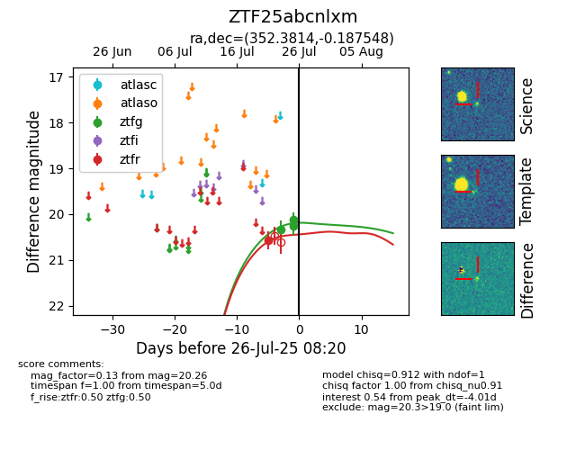

Target ZTF25abcnlxm at 2025-07-26 08:20, see:
FINK: fink-portal.org/ZTF25abcnlxm
Lasair: lasair-ztf.lsst.ac.uk/objects/ZTF25abcnlxm
ALeRCE: alerce.online/object/ZTF25abcnlxm
alt names
ZTF25abcnlxm (ztf,fink)
coordinates:
equatorial (ra, dec) = (352.3814,-0.18755)
galactic (l, b) = (83.4222,-56.64024)
photometry
last ztfg=20.26, ztfr=20.57
3 ztfg, 1 ztfr detections
